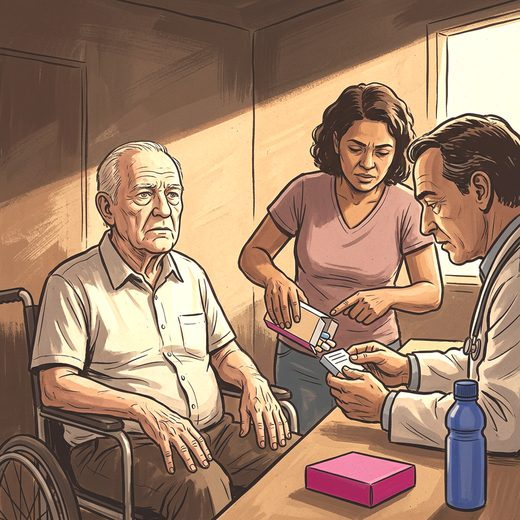

Ferramenta desta aula
Dose equivalente de levodopa. Roda no navegador, sem cadastro.
Consulta rápida à beira do leito
Condutas, doses e interações.
Referências da aula · 6
- Djukic M, Yoshida-Stiksrud E, Nau R. The treatment of older patients with Parkinson's disease. Dtsch Arztebl Int. 2025;122:412-8. doi:10.3238/arztebl.m2025.0083. PMID 40464628.PubMedDOI
- Verschuur CVM, Suwijn SR, Boel JA, Post B, Bloem BR, van Hilten JJ, et al. Randomized delayed-start trial of levodopa in Parkinson's disease. N Engl J Med. 2019;380(4):315-24. PMID 30673543. doi:10.1056/NEJMoa1809983.PubMedDOI
- National Institute for Health and Care Excellence. Parkinson's disease in adults. NICE guideline NG71. London: NICE; 2017.
- Bloem BR, Okun MS, Klein C. Parkinson's disease. Lancet. 2021;397(10291):2284-303. PMID 33848468. doi:10.1016/S0140-6736(21)00218-X.PubMedDOI
- 2023 American Geriatrics Society Beers Criteria® Update Expert Panel. American Geriatrics Society 2023 updated AGS Beers Criteria® for potentially inappropriate medication use in older adults. J Am Geriatr Soc. 2023;71(7):2052-81. PMID 37139824. doi:10.1111/jgs.18372.PubMedDOI
- American Parkinson Disease Association. Interactions between levodopa and food. Disponível em: apdaparkinson.org.